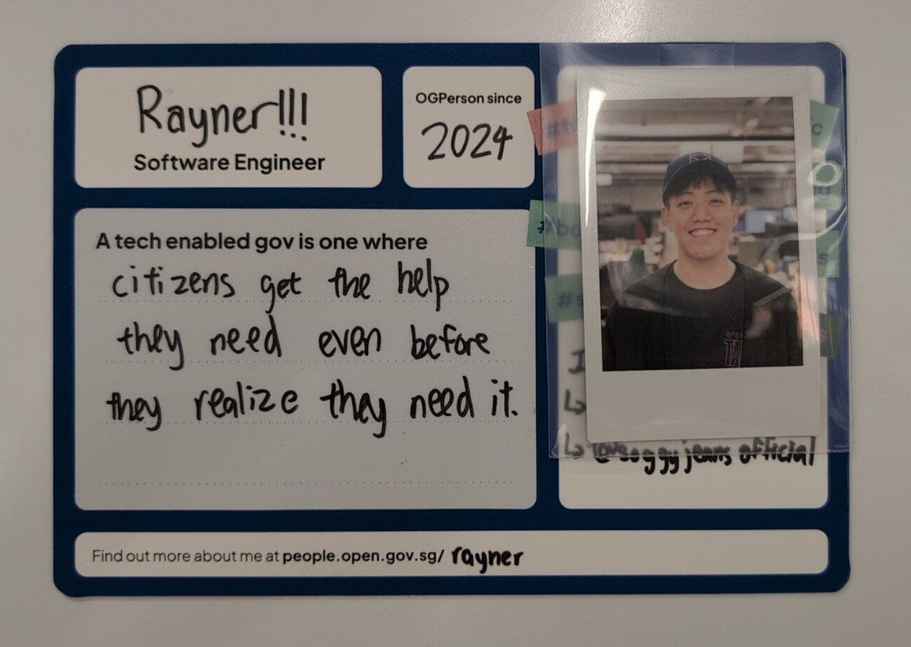

<img src="https://raw.githubusercontent.com/SingaporeJS/logo/master/singaporejs-logo.jpg" alt="SingaporeJS logo" width="30%">
# 🇸🇬 ## talk.js by SingaporeJS
# ⏱ | Time | Event | |------|-------| | <small class="vmid">7.00pm - 7.20pm</small> | Join stream and casual chat | | <small class="vmid">7.20pm - 7.30pm</small> | Opening address by host | | <small class="vmid">7.30pm - 8.30pm</small> | Scheduled talks, each with Q&A | | <small class="vmid">8.30pm - 9.00pm</small> | Open announcements and general chat | | <small class="vmid">9.00pm - 9.10pm</small> | Closing info |
# ⚖️ ## code of conduct <small>SingaporeJS is dedicated to providing a harassment-free meetup experience for everyone, regardless of gender, sexual orientation, disability, physical appearance, body size, race, or religion.</small> <small><b>WE DO NOT TOLERATE HARASSMENT OF PARTICIPANTS IN ANY FORM</b></small> <small>Attendees violating these rules will be asked to leave.</small> <small>[read more](https://singaporejs.github.io/talk.js/code-of-conduct)</small>
# 🤝 ## inclusive communication welcome beginners avoid feigned surprise instead of "you should" try "we prefer" instead of "xxx sucks" try "when i see $a i feel $b, because i need $c, so could you please $d" <!-- Source: https://www.youtube.com/watch?v=PSv7GIX-XQ0&t=650s -->
# 🤝 ## Thank you our host and sponsors!
# ☝️ ## etiquette - silence your phones <!-- - refrain from talking while speakers are presenting --> <!-- - ask questions after talk --> - we love questions! - so if you think of a question, please note it down so you don't forget it
# 🎤 ## line up 1. API as UIs: How ScamShield survives slow app updates<br> <i>_by Rayner</i><br> 2. Engineering Cross-platform Experiences for TikTok LIVE<br> <i>_by Elio</i>
<small> ## 1. API as UIs: How ScamShield survives slow app updates ### Speaker: Rayner <p></p><br> See how backend-driven UI helps ScamShield ship faster, adapt to new scam tactics quickly, and support users on older versions.<br> </small>
<small> ## 2. Engineering Cross-platform Experiences for TikTok LIVE ### Speaker: Elio Talk about how the TikTok LIVE team uses Lynx to rapidly build high-performance, cross-platform UIs that power core business features.<br> </small>
<!-- # 🎙 --> # 🎤 ## speaking at talk.js <small>[github.com/singaporejs/talk.js][talk.js]</small> - each monthly event has its own issue - comment on an issue to propose your talk - volunteer with us? <br>help us with github issues, improve website, host! [talk.js]: https://github.com/singaporejs/talk.js
# <img src="https://upload.wikimedia.org/wikipedia/commons/6/6b/Meetup_Logo.png" style="background: none; width: 1.5em; height: 1.5em" /> ## what next? - some upcoming meetups
# 🦁 ## Junior Dev SG <small>https://www.meetup.com/junior-developers-singapore/events/</small> - for juniors and newbies in the tech industry
<!-- # 📹 --> # 🎥 ## Engineers.sg <!-- <small>https://engineers.sg/organization/singaporejs</small> --> <!-- <br> --> <!-- <small>https://engineers.sg/episodes</small> <br> --> <small>https://engineers.sg/episodes</small> <br> <small>https://engineers.sg/events</small> - watch past talks online - subscribe to their calendar - run by volunteers - volunteer with them
# 🇸🇬 ## 🎤 talk.js next month Might be you! <br> ### Venue: TBC
# 🎤 ## chat and open mic - anyone can make an announcement - keep your announcements short (~2min) - talk about: - something you learnt - a new meetup or conference - job opportunities - just say 'hi'
<!--# <img src="https://user-images.githubusercontent.com/43438/51598408-67b42680-1f38-11e9-99f4-87db319d7141.png" height="140" width="140" />--> <!--<small>gitter.im/SingaporeJS/discussions</small>--> # <img src="https://seeklogo.com/images/T/telegram-logo-AD3D08A014-seeklogo.com.png" height="114" width="114" style="background: none" /> ## SingaporeJS Chat <small>https://t.me/singaporejs</small> - questions, answers - meetup announcements - other groups: DevSG, DevSG_Random - DevSG_Jobs: <small class="vmid">https://t.me/joinchat/BGedIEfG39eNgvQmiki60Q</small> - other links: <small class="vmid">https://linktr.ee/singaporejs</small>
# <img src="https://raw.githubusercontent.com/SingaporeJS/logo/master/singaporejs-logo.jpg" alt="Singapore JavaScript organization logo" width="30%"> <!-- thank you 🙏 --> thanks to hosts, speakers and attendees 🙏 <!-- Thanks to: - organisers - speakers - hosts (Zoom lol) - engineers.sg / Michael / whoever is present - attendees - (everyone who asked a question) Please give us feedkback through Telegram (for now, until we set up an anonymous feedback form) -->
<img src="https://user-images.githubusercontent.com/911799/201983058-f86d968f-0a49-4ee3-8fd5-231a1a4749de.png" width="50%" height="50%"> singaporejs linktree